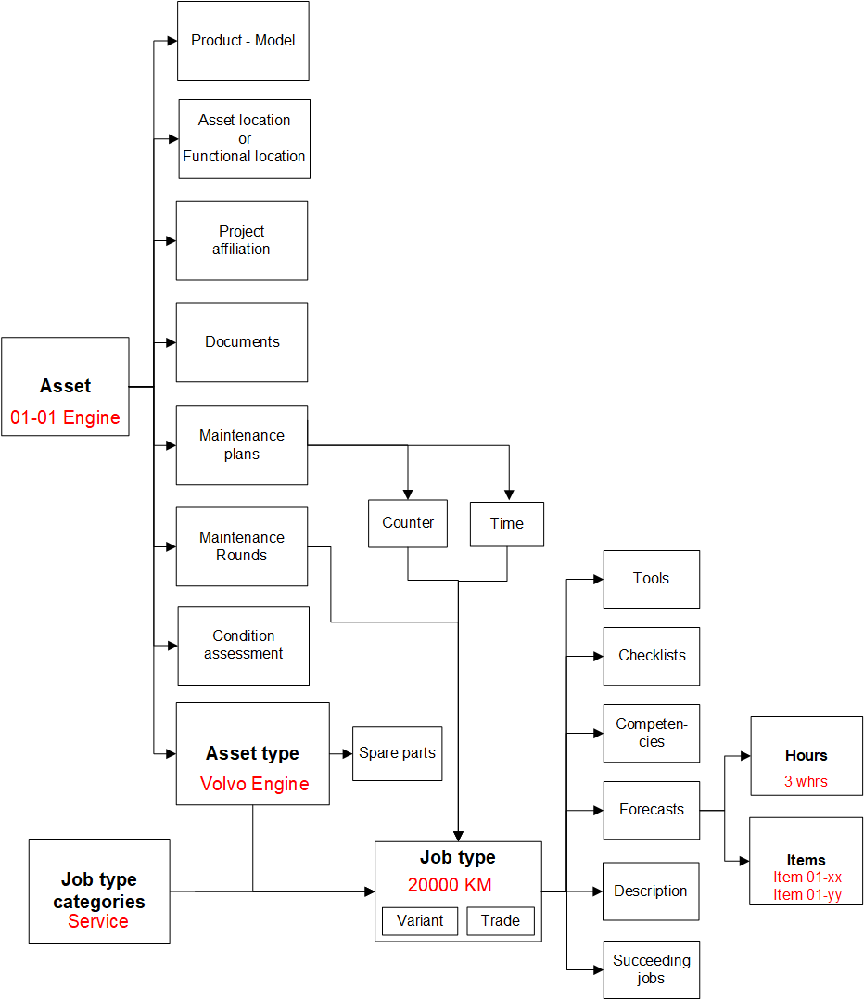
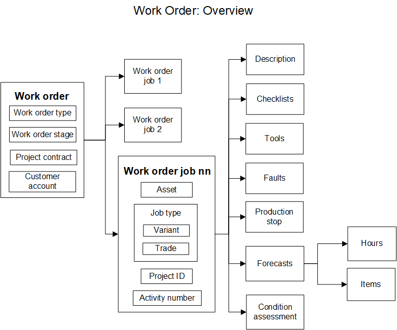
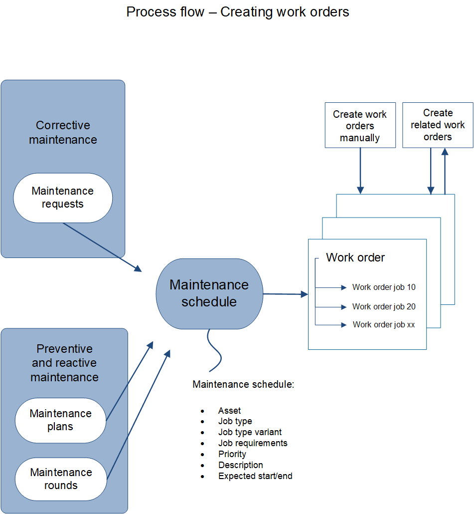
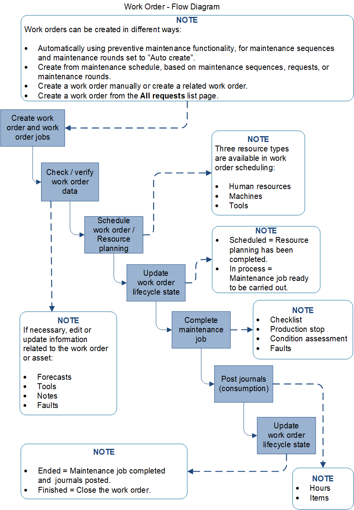

Anlagen und Arbeitsaufträge
Important
Dynamics 365 for Finance and Operations hat sich zu speziell entwickelten Anwendungen entwickelt, mit denen Sie bestimmte Geschäftsfunktionen verwalten können. Weitere Informationen zu diesen Änderungen finden Sie im Dynamics 365-Lizenzierungshandbuch.
In diesem Thema werden Anlagen und Arbeitsaufträge in Asset Management beschrieben. Anlagen und Arbeitsaufträge sind die zentralen Teile von Asset Management. Eine Anlage ist eine Maschine oder ein Maschinenteil, die bzw. das fortlaufende Wartung und kontinuierlichen Service benötigt. Anlagen können in einer hierarchischen Struktur erstellt werden, und sie können funktionalen Standorten zugeordnet sein. Wartungsaufträge können auf allen Ebenen der Anlagenstruktur geplant werden.
Verschiedene Daten wie z. B. Produktinformationen und Anlagenspezifikationen sowie erforderliche Wartungspläne werden für jede Anlage eingerichtet. Die folgende Abbildung zeigt einen Überblick über Anlagendaten und die Zugehörigkeit von Anlagen zu Einzelvorgangstypen. Roter Text wird für Beispiele verwendet, die Vererbung und Abhängigkeiten zeigen.

Jeder Arbeitsauftrag hat einen Arbeitsauftragstyp, wie z. B. vorbeugende Wartung, korrektive Wartung oder Inspektion. Der Arbeitsauftrag enthält einen oder mehrere Arbeitsauftragseinzelvorgänge. Jeder Arbeitsauftragseinzelvorgang definiert einen Einzelvorgang, der für eine Anlage ausgeführt werden muss, und einen zugehörigen Einzelvorgangstyp. Beispiele für zugehörige Einzelvorgangstypen sind 10.000 km, 50.000 km, Überholung nach 1 Jahr und Sicherheitsprüfung. Ein Arbeitsauftrag kann mehreren Anlagen zugeordnet werden.
Die folgende Abbildung zeigt einen Überblick über die wichtigsten Daten in einem Arbeitsauftrag.

Ein Arbeitsauftrag kann einem anderen Arbeitsauftrag zugeordnet werden, und Einzelvorgangstypen können aufeinander folgende Einzelvorgänge enthalten, die einen Arbeitsauftrag bilden. Im Allgemeinen gibt es keine Abhängigkeiten zwischen Arbeitsaufträgen. Daher kann sich ihr Arbeitsauftrags-Lebenszyklusstatus ändern und sie können unabhängig voneinander geplant werden.
Arbeitsaufträge können auf verschiedene Weise erstellt werden, die der korrektiven, vorbeugenden oder reagierenden Wartung zugeordnet sind. Sie können Arbeitsaufträge auch manuell erstellen. Die folgende Abbildung zeigt einen Überblick über den Prozess der automatischen oder manuellen Erstellung von Arbeitsaufträgen.

Mehrere Schritte müssen ausgeführt werden, wenn Sie einen Wartungsauftrag für einen Arbeitsauftrag planen und ausführen möchten. Die folgende Abbildung zeigt einen Überblick über die Verarbeitung eines Arbeitsauftrags.

Note
Wenn Sie in Dynamics 365 Supply Chain Management und dem Modul Asset Management arbeiten, wählen Sie normalerweise Neu, um einen neuen Datensatz zu erstellen, Bearbeiten, um einen vorhandenen Datensatz zu aktualisieren, und Speichern, um die neuen oder bearbeiteten Daten zu speichern.